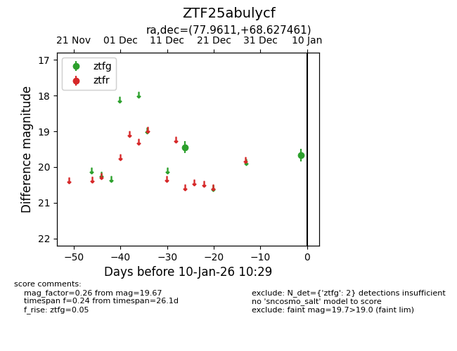
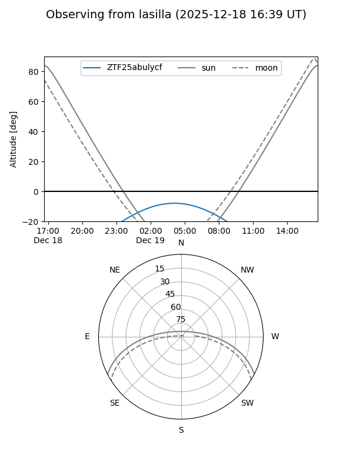
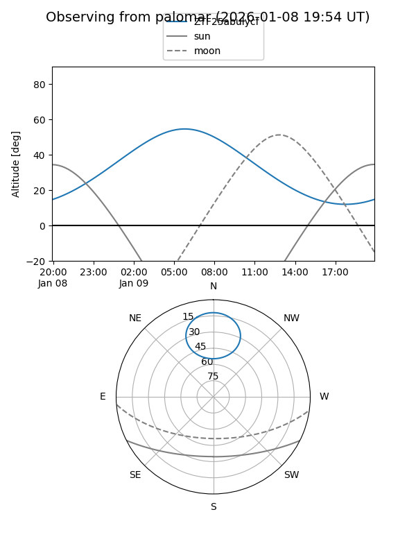

ZTF25abulycf
Target ZTF25abulycf at 2026-01-10 10:30
Aliases and brokers:
FINK: link
Lasair: link
ALeRCE: link
alt names
ZTF25abulycf (ztf,fink_ztf)
Coordinates:
equatorial (ra, dec) = 77.9611,+68.62746
equatorial (HMS+DMS) = 05:11:50.67,+68:37:38.86
galactic (l, b) = (143.1255,+16.74282)
Flags:
Photometry:
last ztfg=19.67
2 ztfg detections
Lightcurve

Visibility


Additional plots